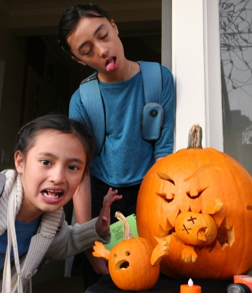
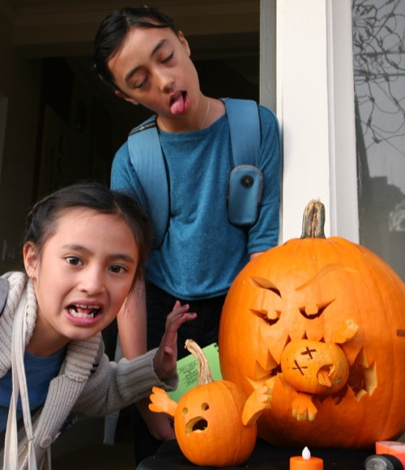
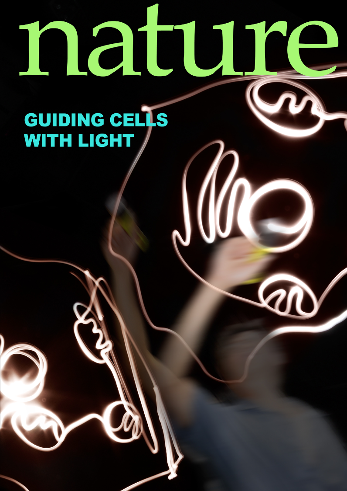
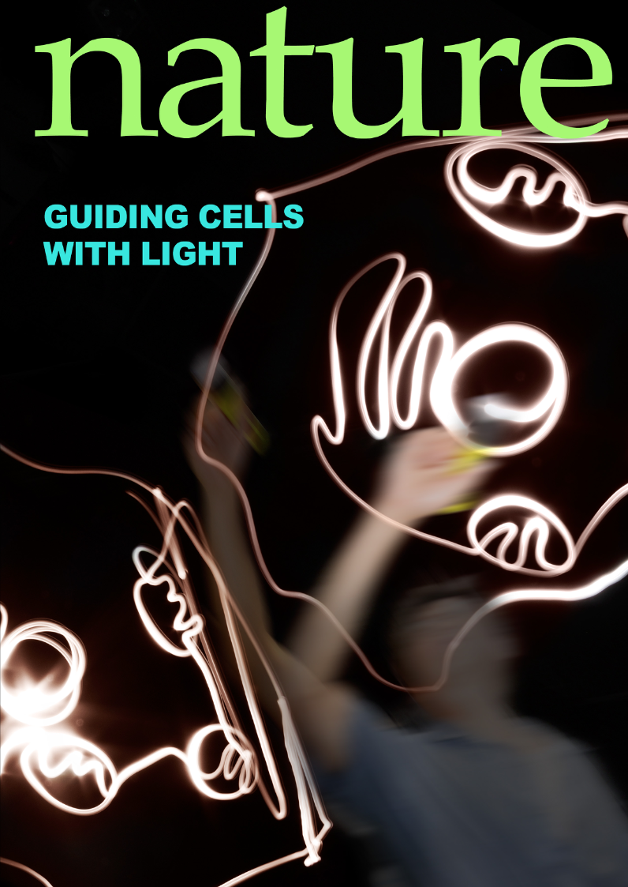
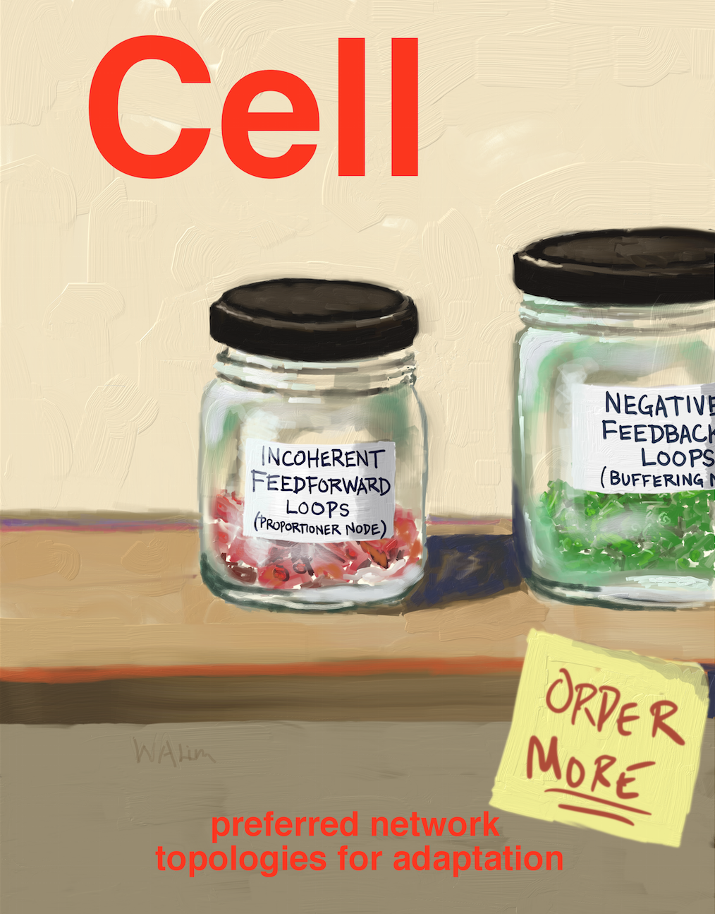
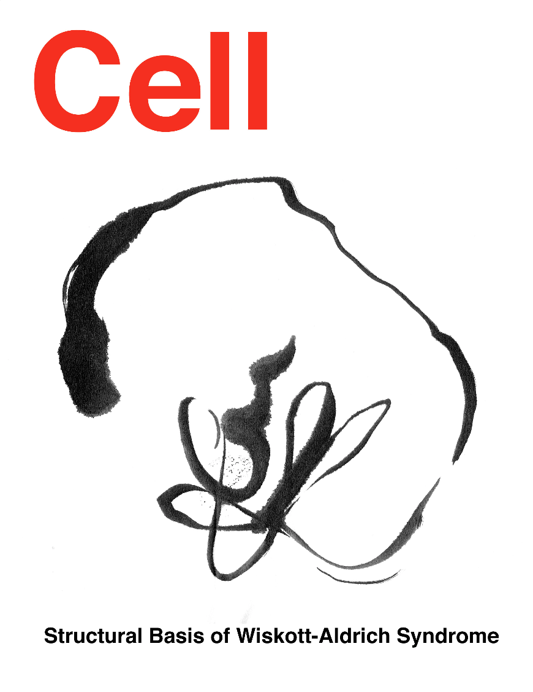
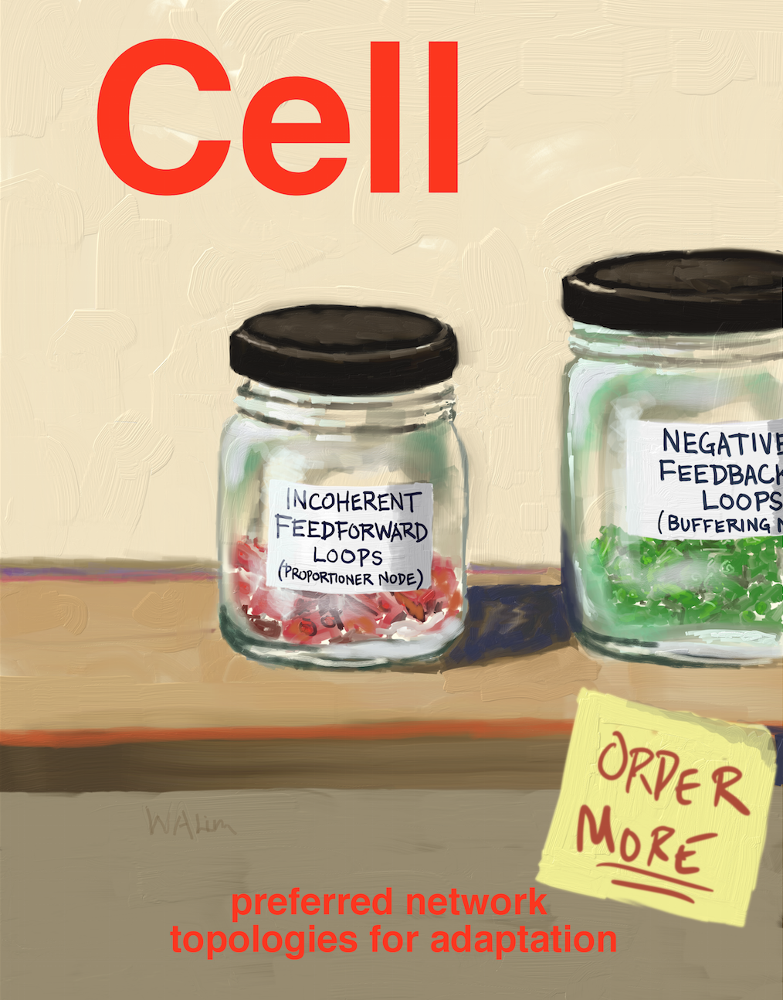
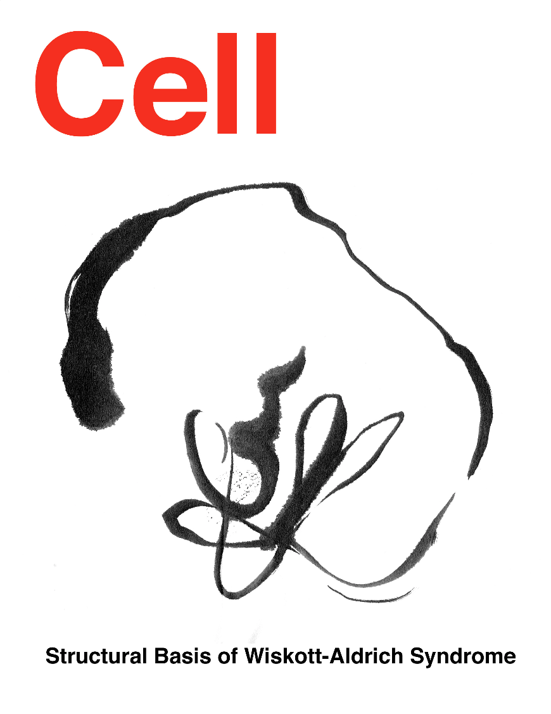
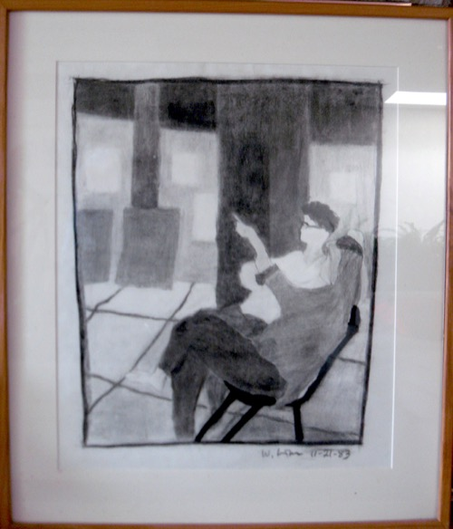
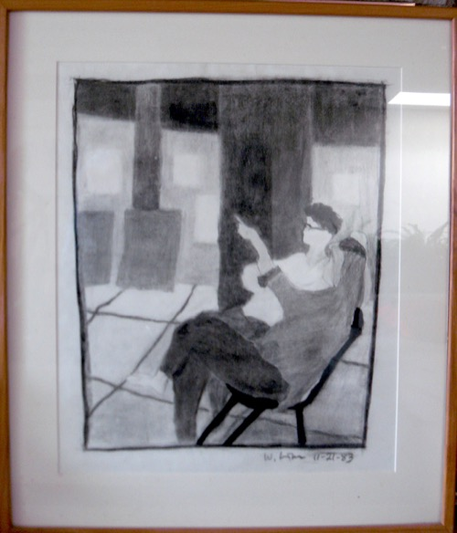

Professor, UCSF Department of Cellular and Molecular Pharmacology
Director, UCSF Cell Design Institute
Director, UCSF Center for Synthetic Immunology (NIH IOTN-i3 Center)
A.B., Harvard University
Ph.D., Massachusetts Institute of Technology
Postdoctoral Fellow, Yale University
Phone: 415-502-8080
wendell.lim  ucsf.edu
ucsf.edu

My general scientific interests are in understanding how genetically encoded molecular programs can yield the remarkable behaviors observed in biological organisms, at multiple scales. I began my research career as a biophysical chemist and structural biologist studying problems such as the evolutionary optimization of enzymes, how protein structure is encoded in sequence, and the determinants of protein-protein interaction specificity. My research has gradually shifted towards utilizing this mechanistic understanding of molecules as a foundation to study how systems of interacting molecules assemble to yield cellular or organismal signaling behaviors – complex behaviors in both space and time. My lab is interested in both the fundamental principles governing these molecular programs, as well as the way such programs have evolved. How to identify the most relevant functional modules at various scales of biology is an ongoing but fascinating challenge. We have also become interested in using synthetic biology and our growing understanding of molecular networks to engineer cells with novel behaviors, such as therapeutic immune cells programmed to recognize and treat cancer or other diseases. This is a tremendously exciting time for creative exploration in biology: our knowledge of the genome and of basic molecular and network mechanisms is now combined with exciting new tools for interfacing with, interrogating, and engineering biological systems.


Pumpkins
 



Cover Art
 

 

We organized a symposium on Science and Cooking featuring chef Corey Lee (Benu) and physicist Dave Weitz (Harvard).
See the video here
Art


 
